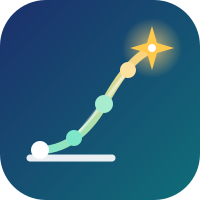

| Product | What | Price |
|---|---|---|
| Free | YouTube, webinars, paper-reading guide | ₹0 |
| Starter | Recorded mini course, 1 to 2 weeks | ₹499–999 |
| Pilot cohort | 6 weeks live, team research project | ₹2,999–4,999 |
| Research Track | 8 to 10 weeks, mentor reviews, paper, talk, application kit | ₹9,999–14,999 |
| Research Pro | One-on-one mentoring and submission support | ₹24,999–39,999 |
| Colleges (B2B) | Batch program or 2-day workshop | Per batch |
Early-bird prices, EMI for higher tiers, a few scholarships per cohort. Raise prices only when results improve.
Together: weekly founder meeting, shared numbers, a written founders' agreement.